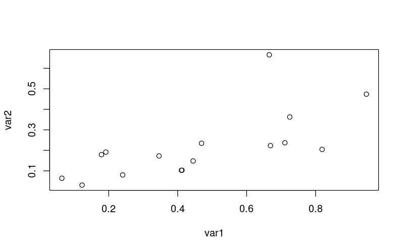

Introduction to R
Table of Contents
Workshop Materials and Introduction
Materials and setup
You should have R installed –if not:
- Open a web browser and go to http://cran.r-project.org and download and install it
- Also helpful to install RStudio (download from http://rstudio.com)
Download workshop materials:
- Download materials from http://tutorials.iq.harvard.edu/R/Rintro.zip
- Extract the zip file containing the materials to your desktop
What is R?
R is a programming language designed for statistical computing. Notable characteristics include:
- Vast capabilities, wide range of statistical and graphical techniques
- Very popular in academia, growing popularity in business: http://r4stats.com/articles/popularity/
- Written primarily by statisticians
- FREE (no cost, open source)
- Excellent community support: mailing list, blogs, tutorials
- Easy to extend by writing new functions
InspiRation
OK, it's free and popular, but what makes R worth learning? In a word, "packages". If you have a data manipulation, analysis or visualization task, chances are good that there is an R package for that. For example:
- Want to find out where we are?
library(ggmap) nwbuilding <- geocode("1737 Cambridge Street Cambridge, MA 02138", source = "google") ggmap(get_map("Cambridge, MA", zoom = 15)) + geom_point(data=nwbuilding, size = 7, shape = 13, color = "red")

- Want to forecast the population of Australia?
library(forecast) fit <- auto.arima(austres) ## Projected numbers (in thousands) of Australian residents plot(forecast(fit))

- Want to interactively explore the shape of the Churyumov–Gerasimenko comet?
library(plotly) comet <- rgl::readOBJ(url("http://sci.esa.int/science-e/www/object/doc.cfm?fobjectid=54726")) comet.plot <- plot_ly(x = comet$vb[1,], y = comet$vb[2,], z = comet$vb[3,], i = comet$it[1,]-1, j= comet$it[2,]-1, k = comet$it[3,]-1, type = "mesh3d") setwd("images") htmlwidgets::saveWidget(comet.plot, file = "comet.html") setwd("..") comet.plot
Whatever you're trying to do, you're probably not the first to try doing it R. Chances are good that someone has already written a package for that.
Graphical User Interfaces (GUIs)
R GUI alternatives
The old-school way is to run R directly in a terminal

But hardly anybody does it that way anymore! The Windows version of R comes with a GUI that looks like this:

The default windows GUI is not very good
- No parentheses matching or syntax highlighting
- No work-space browser
RStudio (an alternative GUI for R) is shown below.

Rstudio has many useful features, including parentheses matching and auto-completion. Rstudio is not the only advanced R interface; other alteratives include Emacs with ESS (shown below).

Emacs + ESS is a very powerful combination, but can be difficult to set up.

Jupyter is a notebook interface that runs in your web browser. A lot of people like it. You can access these workshop notes as a Jupyter notebook at http://tutorials-live.iq.harvard.edu:8000/notebooks/workshops/R/Rintro/Rintro.ipynb
Launch RStudio labsetup
- Open the RStudio program
- Open up today's R script
- In RStudio, Go to File => Open Script
- Locate and open the
Rintro.Rscript in the Rintro folder on your desktop
- Go to Tools => Set working directory => To source file location (more on the working directory later)
- I encourage you to add your own notes to this file! Every line that starts with
#is a comment that will be ignored by R. My comments all start with##; you can add your own, possibly using#or###to distinguish your comments from mine.
Exercise 0
The purpose of this exercise is mostly to give you an opportunity to explore the interface provided by RStudio (or whichever GUI you've decided to use). You may not know how to do these things; that's fine! This is an opportunity to learn. If you don't know how to do something you can can use internet search engines, search on StackOverflow, or ask the person next to you.
Also keep in mind that we are living in a golden age of tab completion. If you don't know the name of an R function, try guessing the first two or three letters and pressing TAB. If you guessed correctly the function you are looking for should appear in a pop up!
- Try to get R to add 2 plus 2.
- Try to calculate the square root of 10.
- There is an R package named
car(Companion to Applied Regression). Try to install this package. - R includes extensive documentation, including a file named "An introduction to R". Try to find this help file.
- Open a web browser, go to http://cran.r-project.org/web/views/ and skim the topic closest to your field/interests.
Exercise 0 solution prototype
- ] Add 2 plus 2.
2 + 2 sum(2, 2)
> 2 + 2 [1] 4 > sum(2, 2) [1] 4 >
- Calculate the square root of 10:
sqrt(10) 10^(1/2)
> sqrt(10) [1] 3.162278 > 10^(1/2) [1] 3.162278 >
- Install the "car" package:
In Rstudio, go to the "Packages" tab and click the "Istall" button. Search in the pop-up window and click "Install".
- Find "An Introduction to R".
Go to the main help page by running 'help.start() or using the GUI menu, find and click on the link to "An Introduction to R".
- Go to http://cran.r-project.org/web/views/ and skim the topic closest to your field/interests.
I like the machine learning topic
Data and Functions
Assignment
Values can be assigned names and used in subsequent operations
- The
<-operator (less than followed by a dash) is used to save values - The name on the left gets the value on the right.
x <- 10 # Assign the value 10 to a variable named x x + 1 # Add 1 to x x # note that x is unchanged y <- x + 1 # Assign y the value x + 1 y x <- x + 100 # change the value of x y ## note that y is unchanged.
> x <- 10 # Assign the value 10 to a variable named x > x + 1 # Add 1 to x [1] 11 > x # note that x is unchanged [1] 10 > y <- x + 1 # Assign y the value x + 1 > y [1] 11 > x <- x + 100 # change the value of x > y ## note that y is unchanged. [1] 11 >
Saved variables can be listed, overwritten and deleted
ls() # List variables in workspace x # Print the value of x x <- 100 # Overwrite x. Note that no warning is given! x rm(x) # Delete x ls()
> ls() # List variables in workspace [1] "comet" "comet.plot" "filter" "fit" "nwbuilding" [6] "x" "y" > x # Print the value of x [1] 110 > x <- 100 # Overwrite x. Note that no warning is given! > x [1] 100 > rm(x) # Delete x > ls() [1] "comet" "comet.plot" "filter" "fit" "nwbuilding" [6] "y" >
Data types and conversion
The x and y data objects we created are numeric vectors of length one. Vectors are the simplest data structure in R, and are the building blocks used to make more complex data structures. Here are some more vector examples.
x <- c(10, 11, 12) X <- c("10", "11", "12") y <- c("h", "e", "l", "l", "o") Y <- "hello" z <- c(1, 0, 1, 1) Z <- c(TRUE, FALSE, TRUE, TRUE)
> x <- c(10, 11, 12)
> X <- c("10", "11", "12")
> y <- c("h", "e", "l", "l", "o")
> Y <- "hello"
> z <- c(1, 0, 1, 1)
> Z <- c(TRUE, FALSE, TRUE, TRUE)
>
Notice that the c function combines its arguments into a vector.
All R objects have a mode and length. Since it is impossible for an object not to have these attributes they are called intrinsic attributes.
print(x) mode(x) length(x) print(X) mode(X) length(X) length(y) length(Y) mode(z) mode(Z)
> print(x) [1] 10 11 12 > mode(x) [1] "numeric" > length(x) [1] 3 > > print(X) [1] "10" "11" "12" > mode(X) [1] "character" > length(X) [1] 3 > > length(y) [1] 5 > length(Y) [1] 1 > > mode(z) [1] "numeric" > mode(Z) [1] "logical" >
Data structures in R can be converted from one type to another using one of the many functions beginning with as.. For example:
mode(x) mode(as.character(x)) mode(X) mode(as.numeric(X))
> mode(x) [1] "numeric" > mode(as.character(x)) [1] "character" > mode(X) [1] "character" > mode(as.numeric(X)) [1] "numeric" >
Functions
Using R is mostly about applying functions to variables. Functions
- take variable(s) as input argument(s)
- perform operations
- return values which can be assigned
- optionally perform side-effects such as writing a file to disk or opening a graphics window
The general form for calling R functions is
## FunctionName(arg.1, arg.2, ..., arg.n)
Arguments can be matched by position or name
Examples:
#?sqrt a <- sqrt(z) # Call the sqrt function with argument x=z ## look at the arguments to the round function args(round) # use ?round if you need more information round(a, digits = 2) # Call round() with arguments x=x and digits=2 ## since matching by name takes precedence these are all equivalent: round(a, 2) round(x = a, 2) round(digits = 2, x = a) ## the only way we can go wrong is by omiting the names and mixing up the order round(2, x) # Functions can be nested so an alternative is round(sqrt(z), digits = 2) # Take sqrt of a and round
> #?sqrt > a <- sqrt(z) # Call the sqrt function with argument x=z > > ## look at the arguments to the round function > args(round) # use ?round if you need more information function (x, digits = 0) NULL > > round(a, digits = 2) # Call round() with arguments x=x and digits=2 [1] 1 0 1 1 > > ## since matching by name takes precedence these are all equivalent: > round(a, 2) [1] 1 0 1 1 > round(x = a, 2) [1] 1 0 1 1 > round(digits = 2, x = a) [1] 1 0 1 1 > > ## the only way we can go wrong is by omiting the names and mixing up the order > round(2, x) [1] 2 2 2 > > # Functions can be nested so an alternative is > round(sqrt(z), digits = 2) # Take sqrt of a and round [1] 1 0 1 1 >
Asking R for help
R has extensive built-in documentation that can be accessed through R commands or through the GUI.
## Start html help, search/browse using web browser help.start() # or use the help menu from you GUI ## Look up the documentation for a function help(plot) ## or use the shortcut: ?plot ## Look up documentation for a package help(package="stats") ## Search documentation from R (not always the best way... google often works better) help.search("classification")
R packages
There are thousands of R packages that extend R's capabilities. Some packages are distributed with R, and some of these are attached to the search path by default. Many more are available in package repositories.
##To see what packages are loaded: search() ## To view available packages: library() ## To load a package: library("MASS") ## Install new package: install.packages("stringdist")
In this workshop we will use the tidyverse package. tidyverse is a meta package that loads the dplyr package for easier data manipulation the readr package for easier data import/export, and several other useful packages.
Exercise 1
The purpose of this exercise is to practice using the package management and help facilities.
- Use the
searchfunction to inspect the current search path. Assign the result to the nameorig.search.path. - What are the
modeandlengthoforig.search.path? - Install the tidyverse package. Compare the output of
search()to the value you've saved inorig.search.path. Has it changed? - Use the
libraryfunction to attach the tidyverse package. Compare the output ofsearch()to the value you've saved inorig.search.path. Has it changed? - Look up the help page for the readr package. Which function would you use to read a tab delimited file?
Exercise 1 solution prototype
## inspect search path search() orig.search.path <- search() ## install the tidyverse package and check search path # install.pacakges("tidyverse") search() ## unchanged ## attach the tidyverse pacakge library("tidyverse") print(orig.search.path) search() ## different now that we have attached the package using the library function ## look up the readr package documentation help(package = "readr") ## I would use read_tsv to read a tab delimited file.
> ## inspect search path
> search()
[1] ".GlobalEnv" "package:stats" "package:graphics"
[4] "package:grDevices" "package:utils" "package:datasets"
[7] "package:haven" "package:dplyr" "package:purrr"
[10] "package:readr" "package:tidyr" "package:tibble"
[13] "package:ggplot2" "package:tidyverse" "package:methods"
[16] "Autoloads" "package:base"
> orig.search.path <- search()
>
> ## install the tidyverse package and check search path
> # install.pacakges("tidyverse")
> search() ## unchanged
[1] ".GlobalEnv" "package:stats" "package:graphics"
[4] "package:grDevices" "package:utils" "package:datasets"
[7] "package:haven" "package:dplyr" "package:purrr"
[10] "package:readr" "package:tidyr" "package:tibble"
[13] "package:ggplot2" "package:tidyverse" "package:methods"
[16] "Autoloads" "package:base"
>
> ## attach the tidyverse pacakge
> library("tidyverse")
> print(orig.search.path)
[1] ".GlobalEnv" "package:stats" "package:graphics"
[4] "package:grDevices" "package:utils" "package:datasets"
[7] "package:haven" "package:dplyr" "package:purrr"
[10] "package:readr" "package:tidyr" "package:tibble"
[13] "package:ggplot2" "package:tidyverse" "package:methods"
[16] "Autoloads" "package:base"
> search() ## different now that we have attached the package using the library function
[1] ".GlobalEnv" "package:stats" "package:graphics"
[4] "package:grDevices" "package:utils" "package:datasets"
[7] "package:haven" "package:dplyr" "package:purrr"
[10] "package:readr" "package:tidyr" "package:tibble"
[13] "package:ggplot2" "package:tidyverse" "package:methods"
[16] "Autoloads" "package:base"
>
> ## look up the readr package documentation
> help(package = "readr")
Information on package 'readr'
Description:
Package: readr
Version: 1.0.0
Title: Read Tabular Data
Description: Read flat/tabular text files from disk (or
a connection).
Authors@R: c( person("Hadley", "Wickham", ,
"hadley@rstudio.com", c("aut", "cre")),
person("Jim", "Hester", ,
"jim.hester@rstudio.com", "aut"),
person("Romain", "Francois", role =
"aut"), person("R Core Team", role =
"ctb", comment = "Date time code adapted
from R"), person("RStudio", role = "cph"),
person("Jukka", "Jäylnki", role = c("ctb",
"cph"), comment = "grisu3
implementation"), person("Mikkel",
"Jørgensen", role = c("ctb", "cph"),
comment = "grisu3 implementation"))
Encoding: UTF-8
Depends: R (>= 3.0.2)
LinkingTo: Rcpp, BH
Imports: Rcpp (>= 0.11.5), curl, tibble, hms, R6
Suggests: testthat, knitr, rmarkdown, stringi, covr
License: GPL (>= 2) | file LICENSE
BugReports: https://github.com/hadley/readr/issues
URL: https://github.com/hadley/readr
VignetteBuilder: knitr
RoxygenNote: 5.0.1
NeedsCompilation: yes
Packaged: 2016-08-03 15:26:00 UTC; hadley
Author: Hadley Wickham [aut, cre], Jim Hester
[aut], Romain Francois [aut], R Core Team
[ctb] (Date time code adapted from R),
RStudio [cph], Jukka Jäylnki [ctb, cph]
(grisu3 implementation), Mikkel Jørgensen
[ctb, cph] (grisu3 implementation)
Maintainer: Hadley Wickham <hadley@rstudio.com>
Repository: CRAN
Date/Publication: 2016-08-03 17:55:25
Built: R 3.3.1; x86_64-pc-linux-gnu; 2016-09-06
14:30:00 UTC; unix
Index:
cols Create column specification
cols_condense Examine the column specifications for a data
frame
count_fields Count the number of fields in each line of a
file.
date_names Create or retrieve date names
guess_encoding Guess encoding of file.
locale Create locales
parse_atomic Parse character vector in an atomic vector.
parse_datetime Parse a character vector of dates or date
times.
parse_factor Parse a character vector into a factor
parse_guess Parse a character vector into the "best" type.
parse_number Extract numbers out of an atomic vector
problems Retrieve parsing problems.
read_delim Read a delimited file into a data frame.
read_file Read a file into a string.
read_fwf Read a fixed width file.
read_lines Read lines from a file or string.
read_log Read common/combined log file.
read_rds Read object from RDS file.
read_table Read text file where columns are separated by
whitespace.
readr_example Get path to readr example
spec_delim Retrieve the column specification of a file.
type_convert Re-convert character columns in existing data
frame.
write_delim Save a data frame to a delimited file.
write_lines Write lines/ a file
write_rds Write a single R object to file
Further information is available in the following vignettes in
directory
'/home/izahn/R/x86_64-pc-linux-gnu-library/3.3/readr/doc':
column-types: Column types (source, pdf)
locales: Locales (source, pdf)
> ## I would use read_tsv to read a tab delimited file.
>
Getting data into R
The baby names data set
The examples in this workshop use the baby names data provided by the governments of the United States and the United Kingdom. A cleaned and merged version of these data is in dataSets/babyNames.csv.
The "working directory" and listing files
R knows the directory it was started in, and refers to this as the "working directory". Since our workshop examples are in the Rintro folder in your Downloads folder, we should all take a moment to set that as our working directory.
getwd() # what is my current working directory? # setwd("~/Desktop/Rintro") # change directory
Note that "~" means "my home directory" but that this can mean different things on different operating systems. You can also use the Files tab in Rstudio to navigate to a directory, then click "More -> Set as working directory".
We can a set the working directory using paths relative to the current working directory. Once we are in the "Rintro" folder we can navigate to the "dataSets" folder like this:
getwd() # get the current working directory setwd("dataSets") # set wd to the dataSets folder getwd() setwd("..") # set wd to enclosing folder ("up")
> getwd() # get the current working directory
[1] "/home/izahn/Documents/Work/Classes/IQSS_Stats_Workshops/R/Rintro"
> setwd("dataSets") # set wd to the dataSets folder
> getwd()
[1] "/home/izahn/Documents/Work/Classes/IQSS_Stats_Workshops/R/Rintro/dataSets"
> setwd("..") # set wd to enclosing folder ("up")
>
It can be convenient to list files in a directory without leaving R
list.files("dataSets") # list files in the dataSets folder
> list.files("dataSets") # list files in the dataSets folder
[1] "babyNames.csv"
>
Readers for common file types
In order to read data from a file, you have to know what kind of file it is. The table below lists the functions that can import data from common file formats.
| data type | function | package |
|---|---|---|
| comma separated (.csv) | readcsv() | readr (tidyverse) |
| other delimited formats | readdelim() | readr (tidyverse) |
| R (.Rds) | readrds() | readr (tidyverse) |
| Stata (.dta) | readstata() | haven (tidyverse, needs to be attached separately) |
| SPSS (.sav) | readspss() | haven (tidyverse, needs to be attached separately) |
| SAS (.sas7bdat) | readsas() | haven (tidyverse, needs to be attached separately) |
| Excel (.xls, .xlsx) | readexcel | readxl (tidyverse, needs to be attached separately) |
Exercise 2
The purpose of this exercise is to practice reading data into R. The data in "dataSets/babyNames.csv" is moderately tricky to read, making it a good data set to practice on.
- Open the help page for the
read_csvfunction. How can you limit the number of rows to be read in? - Read just the first 10 rows of "
dataSets/babyNames.csv". Notice that the "Sex" column has been read as a logical (TRUE/FALSE). - Read the
read_csvhelp page to figure out how to make it read the "Sex" column as a character. Make adjustments to your code until you have read in the first 10 rows with the correct column types. "Year" and "Name.length" should be integer (int), "Count" and "Percent" should be double (dbl) and everything else should be character (chr). - Once you have successfully read in the first 10 rows, read the whole file, assigning the result to the name
baby.names.
Exercise 2 solution prototype
## read ?read_csv ## limit rows with n_max argument read_csv("dataSets/babyNames.csv", n_max = 10) ## specify column types in the col_types argument read_csv("dataSets/babyNames.csv", n_max = 10, col_types = "??c????????????") ## read all the data baby.names <- read_csv("dataSets/babyNames.csv", col_types = "??c????????????")
> ## read ?read_csv
> ## limit rows with n_max argument
> read_csv("dataSets/babyNames.csv", n_max = 10)
# A tibble: 10 × 15
Location Year Sex Name Count Percent
<chr> <int> <lgl> <chr> <dbl> <dbl>
1 England and Wales 1996 FALSE sophie 7087 2.394273
2 England and Wales 1996 FALSE chloe 6824 2.305421
3 England and Wales 1996 FALSE jessica 6711 2.267245
4 England and Wales 1996 FALSE emily 6415 2.167244
5 England and Wales 1996 FALSE lauren 6299 2.128055
6 England and Wales 1996 FALSE hannah 5916 1.998662
7 England and Wales 1996 FALSE charlotte 5866 1.981770
8 England and Wales 1996 FALSE rebecca 5828 1.968932
9 England and Wales 1996 FALSE amy 5206 1.758796
10 England and Wales 1996 FALSE megan 4948 1.671633
# ... with 9 more variables: Sounds.like <chr>,
# Alternative.spellings <chr>, Name.length <int>, First.1 <chr>,
# First.2 <chr>, First.3 <chr>, Last.1 <chr>, Last.2 <chr>,
# Last.3 <chr>
>
> ## specify column types in the col_types argument
> read_csv("dataSets/babyNames.csv", n_max = 10, col_types = "??c????????????")
# A tibble: 10 × 15
Location Year Sex Name Count Percent
<chr> <int> <chr> <chr> <dbl> <dbl>
1 England and Wales 1996 F sophie 7087 2.394273
2 England and Wales 1996 F chloe 6824 2.305421
3 England and Wales 1996 F jessica 6711 2.267245
4 England and Wales 1996 F emily 6415 2.167244
5 England and Wales 1996 F lauren 6299 2.128055
6 England and Wales 1996 F hannah 5916 1.998662
7 England and Wales 1996 F charlotte 5866 1.981770
8 England and Wales 1996 F rebecca 5828 1.968932
9 England and Wales 1996 F amy 5206 1.758796
10 England and Wales 1996 F megan 4948 1.671633
# ... with 9 more variables: Sounds.like <chr>,
# Alternative.spellings <chr>, Name.length <int>, First.1 <chr>,
# First.2 <chr>, First.3 <chr>, Last.1 <chr>, Last.2 <chr>,
# Last.3 <chr>
>
> ## read all the data
> baby.names <- read_csv("dataSets/babyNames.csv", col_types = "??c????????????")
>
Checking imported data
It is always a good idea to examine the imported data set–usually we want the results to be a data.frame
## we know that this object will have mode and length, because all R objects do. mode(baby.names) length(baby.names) # number of columns ## additional information about this data object class(baby.names) # check to see that test is a data.frame dim(baby.names) # how many rows and columns? names(baby.names) # or colnames(baby.names) str(baby.names) # more details glimpse(baby.names) # details, more compactly
> ## we know that this object will have mode and length, because all R objects do. > mode(baby.names) [1] "list" > length(baby.names) # number of columns [1] 15 > > ## additional information about this data object > class(baby.names) # check to see that test is a data.frame [1] "tbl_df" "tbl" "data.frame" > dim(baby.names) # how many rows and columns? [1] 1966001 15 > names(baby.names) # or colnames(baby.names) [1] "Location" "Year" [3] "Sex" "Name" [5] "Count" "Percent" [7] "Sounds.like" "Alternative.spellings" [9] "Name.length" "First.1" [11] "First.2" "First.3" [13] "Last.1" "Last.2" [15] "Last.3" > str(baby.names) # more details Classes 'tbl_df', 'tbl' and 'data.frame': 1966001 obs. of 15 variables: $ Location : chr "England and Wales" "England and Wales" "England and Wales" "England and Wales" ... $ Year : int 1996 1996 1996 1996 1996 1996 1996 1996 1996 1996 ... $ Sex : chr "F" "F" "F" "F" ... $ Name : chr "sophie" "chloe" "jessica" "emily" ... $ Count : num 7087 6824 6711 6415 6299 ... $ Percent : num 2.39 2.31 2.27 2.17 2.13 ... $ Sounds.like : chr "SAFY/SF" "CHL/XL" "JASAC/JSK" "ENALY/EML" ... $ Alternative.spellings: chr "saffie/sofie/sophee/sophie/sophie-/sophy" "chloe/chloe-" "jasika/jassica/jesica/jesika/jesseca/jessic/jessica/jessica-/jessika" "emalee/emalie/emaly/emelee/emelie/emelly/emely/emilee/emiley/emilie/emillee/emillie/emilly/emily/emily-/emmalee/emma-lee/emmali"| __truncated__ ... $ Name.length : int 6 5 7 5 6 6 9 7 3 5 ... $ First.1 : chr "s" "c" "j" "e" ... $ First.2 : chr "so" "ch" "je" "em" ... $ First.3 : chr "sop" "chl" "jes" "emi" ... $ Last.1 : chr "e" "e" "a" "y" ... $ Last.2 : chr "ie" "oe" "ca" "ly" ... $ Last.3 : chr "hie" "loe" "ica" "ily" ... - attr(*, "spec")=List of 2 ..$ cols :List of 15 .. ..$ Location : list() .. .. ..- attr(*, "class")= chr "collector_character" "collector" .. ..$ Year : list() .. .. ..- attr(*, "class")= chr "collector_integer" "collector" .. ..$ Sex : list() .. .. ..- attr(*, "class")= chr "collector_character" "collector" .. ..$ Name : list() .. .. ..- attr(*, "class")= chr "collector_character" "collector" .. ..$ Count : list() .. .. ..- attr(*, "class")= chr "collector_double" "collector" .. ..$ Percent : list() .. .. ..- attr(*, "class")= chr "collector_double" "collector" .. ..$ Sounds.like : list() .. .. ..- attr(*, "class")= chr "collector_character" "collector" .. ..$ Alternative.spellings: list() .. .. ..- attr(*, "class")= chr "collector_character" "collector" .. ..$ Name.length : list() .. .. ..- attr(*, "class")= chr "collector_integer" "collector" .. ..$ First.1 : list() .. .. ..- attr(*, "class")= chr "collector_character" "collector" .. ..$ First.2 : list() .. .. ..- attr(*, "class")= chr "collector_character" "collector" .. ..$ First.3 : list() .. .. ..- attr(*, "class")= chr "collector_character" "collector" .. ..$ Last.1 : list() .. .. ..- attr(*, "class")= chr "collector_character" "collector" .. ..$ Last.2 : list() .. .. ..- attr(*, "class")= chr "collector_character" "collector" .. ..$ Last.3 : list() .. .. ..- attr(*, "class")= chr "collector_character" "collector" ..$ default: list() .. ..- attr(*, "class")= chr "collector_guess" "collector" ..- attr(*, "class")= chr "col_spec" > glimpse(baby.names) # details, more compactly Observations: 1,966,001 Variables: 15 $ Location <chr> "England and Wales", "England and W... $ Year <int> 1996, 1996, 1996, 1996, 1996, 1996,... $ Sex <chr> "F", "F", "F", "F", "F", "F", "F", ... $ Name <chr> "sophie", "chloe", "jessica", "emil... $ Count <dbl> 7087, 6824, 6711, 6415, 6299, 5916,... $ Percent <dbl> 2.3942729, 2.3054210, 2.2672450, 2.... $ Sounds.like <chr> "SAFY/SF", "CHL/XL", "JASAC/JSK", "... $ Alternative.spellings <chr> "saffie/sofie/sophee/sophie/sophie-... $ Name.length <int> 6, 5, 7, 5, 6, 6, 9, 7, 3, 5, 7, 5,... $ First.1 <chr> "s", "c", "j", "e", "l", "h", "c", ... $ First.2 <chr> "so", "ch", "je", "em", "la", "ha",... $ First.3 <chr> "sop", "chl", "jes", "emi", "lau", ... $ Last.1 <chr> "e", "e", "a", "y", "n", "h", "e", ... $ Last.2 <chr> "ie", "oe", "ca", "ly", "en", "ah",... $ Last.3 <chr> "hie", "loe", "ica", "ily", "ren", ... >
Data Manipulation
data.frame objects
Usually data read into R will be stored as a data.frame
- A data.frame is a list of vectors of equal length
- Each vector in the list forms a column
- Each column can be a differnt type of vector
- Typically columns are variables and the rows are observations
A data.frame has two dimensions corresponding the number of rows and the number of columns (in that order)
Slice and Filter data.frames rows
You can extract subsets of data.frames using slice to select rows by number and filter to select rows that match some condition. It works like this:
## make up some example data (example.df <- data.frame(id = rep(letters[1:4], each = 4), t = rep(1:4, times = 4), var1 = runif(16), var2 = sample(letters[1:3], 16, replace = TRUE))) ## rows 2 and 4 slice(example.df, c(2, 4)) ## rows where id == "a" filter(example.df, id == "a") ## rows where id is either "a" or "b" filter(example.df, id %in% c("a", "b"))
> ## make up some example data
> (example.df <- data.frame(id = rep(letters[1:4], each = 4),
+ t = rep(1:4, times = 4),
+ var1 = runif(16),
+ var2 = sample(letters[1:3], 16, replace = TRUE)))
id t var1 var2
1 a 1 0.4110324 c
2 a 2 0.6100210 b
3 a 3 0.1482942 c
4 a 4 0.8145195 a
5 b 1 0.4792361 b
6 b 2 0.3801964 c
7 b 3 0.6870040 b
8 b 4 0.4567090 a
9 c 1 0.2459155 c
10 c 2 0.2863364 a
11 c 3 0.1401366 b
12 c 4 0.6435420 c
13 d 1 0.5189124 a
14 d 2 0.4717837 b
15 d 3 0.8312323 a
16 d 4 0.8857985 b
>
> ## rows 2 and 4
> slice(example.df, c(2, 4))
id t var1 var2
1 a 2 0.6100210 b
2 a 4 0.8145195 a
>
> ## rows where id == "a"
> filter(example.df, id == "a")
id t var1 var2
1 a 1 0.4110324 c
2 a 2 0.6100210 b
3 a 3 0.1482942 c
4 a 4 0.8145195 a
>
> ## rows where id is either "a" or "b"
> filter(example.df, id %in% c("a", "b"))
id t var1 var2
1 a 1 0.4110324 c
2 a 2 0.6100210 b
3 a 3 0.1482942 c
4 a 4 0.8145195 a
5 b 1 0.4792361 b
6 b 2 0.3801964 c
7 b 3 0.6870040 b
8 b 4 0.4567090 a
>
Select data.frame columns
slice and filter are used to extract rows. select is used to extract columns
select(example.df, id, var1) select(example.df, id, t, var1)
> select(example.df, id, var1) id var1 1 a 0.4110324 2 a 0.6100210 3 a 0.1482942 4 a 0.8145195 5 b 0.4792361 6 b 0.3801964 7 b 0.6870040 8 b 0.4567090 9 c 0.2459155 10 c 0.2863364 11 c 0.1401366 12 c 0.6435420 13 d 0.5189124 14 d 0.4717837 15 d 0.8312323 16 d 0.8857985 > select(example.df, id, t, var1) id t var1 1 a 1 0.4110324 2 a 2 0.6100210 3 a 3 0.1482942 4 a 4 0.8145195 5 b 1 0.4792361 6 b 2 0.3801964 7 b 3 0.6870040 8 b 4 0.4567090 9 c 1 0.2459155 10 c 2 0.2863364 11 c 3 0.1401366 12 c 4 0.6435420 13 d 1 0.5189124 14 d 2 0.4717837 15 d 3 0.8312323 16 d 4 0.8857985 >
You can also conveniently select a single column using $, like this:
example.df$t
> example.df$t [1] 1 2 3 4 1 2 3 4 1 2 3 4 1 2 3 4 >
Data manipulation commands can be combined:
filter(select(example.df, id, var1), id == "a")
> filter(select(example.df, + id, + var1), + id == "a") id var1 1 a 0.4110324 2 a 0.6100210 3 a 0.1482942 4 a 0.8145195 >
In the previous example we used == to filter rows where id was "a". Other relational and logical operators are listed below.
| Operator | Meaning |
|---|---|
| == | equal to |
| != | not equal to |
| > | greater than |
| >= | greater than or equal to |
| < | less than |
| <= | less than or equal to |
| %in% | contained in |
| & | and |
| | | or |
Adding, removing, and modifying data.frame columns
You can modify data.frames using the mutate() function. It works like this:
example.df ## modify example.df and assign the modified data.frame the name example.df example.df <- mutate(example.df, var2 = var1/t, # replace the values in var2 var3 = 1:length(t), # create a new column named var3 var4 = factor(letters[t]), t = NULL # delete the column named t ) ## examine our changes example.df
> example.df id t var1 var2 1 a 1 0.4110324 c 2 a 2 0.6100210 b 3 a 3 0.1482942 c 4 a 4 0.8145195 a 5 b 1 0.4792361 b 6 b 2 0.3801964 c 7 b 3 0.6870040 b 8 b 4 0.4567090 a 9 c 1 0.2459155 c 10 c 2 0.2863364 a 11 c 3 0.1401366 b 12 c 4 0.6435420 c 13 d 1 0.5189124 a 14 d 2 0.4717837 b 15 d 3 0.8312323 a 16 d 4 0.8857985 b > > ## modify example.df and assign the modified data.frame the name example.df > example.df <- mutate(example.df, + var2 = var1/t, # replace the values in var2 + var3 = 1:length(t), # create a new column named var3 + var4 = factor(letters[t]), + t = NULL # delete the column named t + ) > > ## examine our changes > example.df id var1 var2 var3 var4 1 a 0.4110324 0.41103236 1 a 2 a 0.6100210 0.30501051 2 b 3 a 0.1482942 0.04943139 3 c 4 a 0.8145195 0.20362988 4 d 5 b 0.4792361 0.47923614 5 a 6 b 0.3801964 0.19009822 6 b 7 b 0.6870040 0.22900134 7 c 8 b 0.4567090 0.11417726 8 d 9 c 0.2459155 0.24591552 9 a 10 c 0.2863364 0.14316821 10 b 11 c 0.1401366 0.04671222 11 c 12 c 0.6435420 0.16088550 12 d 13 d 0.5189124 0.51891245 13 a 14 d 0.4717837 0.23589185 14 b 15 d 0.8312323 0.27707744 15 c 16 d 0.8857985 0.22144961 16 d >
Exporting Data
Now that we have made some changes to our data set, we might want to save those changes to a file.
# write data to a .csv file write_csv(example.df, path = "example.csv") # write data to an R file write_rds(example.df, path = "example.rds") # write data to a Stata file library(haven) write_dta(example.df, path = "example.dta")
Saving and loading R workspaces
In addition to importing individual datasets, R can save and load entire workspaces
ls() # list objects in our workspace save.image(file="myWorkspace.RData") # save workspace rm(list=ls()) # remove all objects from our workspace ls() # list stored objects to make sure they are deleted
> ls() # list objects in our workspace [1] "a" "baby.names" "comet" [4] "comet.plot" "example.df" "filter" [7] "fit" "nwbuilding" "orig.search.path" [10] "x" "X" "y" [13] "Y" "z" "Z" > save.image(file="myWorkspace.RData") # save workspace > rm(list=ls()) # remove all objects from our workspace > ls() # list stored objects to make sure they are deleted character(0) >
Load the "myWorkspace.RData" file and check that it is restored
load("myWorkspace.RData") # load myWorkspace.RData ls() # list objects
> load("myWorkspace.RData") # load myWorkspace.RData
> ls() # list objects
[1] "a" "baby.names" "comet"
[4] "comet.plot" "example.df" "filter"
[7] "fit" "nwbuilding" "orig.search.path"
[10] "x" "X" "y"
[13] "Y" "z" "Z"
>
Exercise 3: Data manipulation
Read in the "babyNames.csv" file if you have not already done so, assigning the result to baby.names.
- Filter
baby.namesto show only names given to at least 3 percent of boys. - Create a column named "Proportion" equal to Percent divided by 100.
- Filter
baby.namesto include only names given to at least 3 percent of Girls. Save this to a Stata data set named "popularGirlNames.dta")
Exercise 3 solution prototype
filter(baby.names, Sex == "M" & Percent >= 3) baby.names <- mutate(baby.names, Proportion = Percent/100) popular.girl.names <- filter(baby.names, Sex == "F" & Percent >= 3) write_csv(popular.girl.names, path = "popularGirlNames.dta")
> filter(baby.names, Sex == "M" & Percent >= 3)
# A tibble: 111 × 16
Location Year Sex Name Count Percent Sounds.like
<chr> <int> <chr> <chr> <dbl> <dbl> <chr>
1 England and Wales 1996 M jack 10779 3.384121 JAC/JK
2 England and Wales 1996 M daniel 10338 3.245667 DANAL/TNL
3 England and Wales 1996 M thomas 9603 3.014910 THAN/0MS
4 England and Wales 1997 M jack 10145 3.226227 JAC/JK
5 England and Wales 1997 M james 9853 3.133368 JAN/JMS
6 England and Wales 1997 M thomas 9479 3.014431 THAN/0MS
7 England and Wales 1998 M jack 9845 3.170958 JAC/JK
8 England and Wales 1998 M thomas 9468 3.049531 THAN/0MS
9 England and Wales 1999 M jack 9785 3.226806 JAC/JK
10 England and Wales 1999 M thomas 9454 3.117652 THAN/0MS
# ... with 101 more rows, and 9 more variables:
# Alternative.spellings <chr>, Name.length <int>, First.1 <chr>,
# First.2 <chr>, First.3 <chr>, Last.1 <chr>, Last.2 <chr>,
# Last.3 <chr>, Proportion <dbl>
>
> baby.names <- mutate(baby.names, Proportion = Percent/100)
>
> popular.girl.names <- filter(baby.names, Sex == "F" & Percent >= 3)
>
> write_csv(popular.girl.names, path = "popularGirlNames.dta")
>
Basic Statistics and Graphs
Basic statistics
Descriptive statistics of single variables are straightforward:
sum(example.df$var1) # calculate sum of var 1 mean(example.df$var1) median(example.df$var1) sd(example.df$var1) # calculate standard deviation of var1 var(example.df$var1) ## summaries of individual columns summary(example.df$var1) summary(example.df$var2) ## summary of whole data.frame summary(example.df)
>
> sum(example.df$var1) # calculate sum of var 1
[1] 8.01067
> mean(example.df$var1)
[1] 0.5006669
> median(example.df$var1)
[1] 0.4755099
> sd(example.df$var1) # calculate standard deviation of var1
[1] 0.2329931
> var(example.df$var1)
[1] 0.0542858
>
> ## summaries of individual columns
> summary(example.df$var1)
Min. 1st Qu. Median Mean 3rd Qu. Max.
0.1401 0.3567 0.4755 0.5007 0.6544 0.8858
> summary(example.df$var2)
Min. 1st Qu. Median Mean 3rd Qu. Max.
0.04671 0.15650 0.22520 0.23950 0.28410 0.51890
>
> ## summary of whole data.frame
> summary(example.df)
id var1 var2 var3 var4
a:4 Min. :0.1401 Min. :0.04671 Min. : 1.00 a:4
b:4 1st Qu.:0.3567 1st Qu.:0.15646 1st Qu.: 4.75 b:4
c:4 Median :0.4755 Median :0.22523 Median : 8.50 c:4
d:4 Mean :0.5007 Mean :0.23948 Mean : 8.50 d:4
3rd Qu.:0.6544 3rd Qu.:0.28406 3rd Qu.:12.25
Max. :0.8858 Max. :0.51891 Max. :16.00
>
Some of these functions (e.g., summary) will also work with data.frames and other types of objects, others (such as sd) will not.
Statistics by grouping variable(s)
The summarize function can be used to calculate statistics by grouping variable. Here is how it works.
summarize(group_by(example.df, id), mean(var1), sd(var1))
> summarize(group_by(example.df, id), mean(var1), sd(var1))
# A tibble: 4 × 3
id `mean(var1)` `sd(var1)`
<fctr> <dbl> <dbl>
1 a 0.4959668 0.2843556
2 b 0.5007864 0.1311820
3 c 0.3289826 0.2185782
4 d 0.6769317 0.2117308
>
You can group by multiple variables:
summarize(group_by(example.df, id, var3), mean(var1), sd(var1))
> summarize(group_by(example.df, id, var3), mean(var1), sd(var1))
Source: local data frame [16 x 4]
Groups: id [?]
id var3 `mean(var1)` `sd(var1)`
<fctr> <int> <dbl> <dbl>
1 a 1 0.4110324 NA
2 a 2 0.6100210 NA
3 a 3 0.1482942 NA
4 a 4 0.8145195 NA
5 b 5 0.4792361 NA
6 b 6 0.3801964 NA
7 b 7 0.6870040 NA
8 b 8 0.4567090 NA
9 c 9 0.2459155 NA
10 c 10 0.2863364 NA
11 c 11 0.1401366 NA
12 c 12 0.6435420 NA
13 d 13 0.5189124 NA
14 d 14 0.4717837 NA
15 d 15 0.8312323 NA
16 d 16 0.8857985 NA
>
#+ENDSRC
Save R output to a file
Earlier we learned how to write a data set to a file. But what if we want to write something that isn't in a nice rectangular format, like the output of summary? For that we can use the sink() function:
sink(file="output.txt", split=TRUE) # start logging print("This is the summary of example.df \n") print(summary(example.df)) sink() ## sink with no arguments turns logging off
> sink(file="output.txt", split=TRUE) # start logging
> print("This is the summary of example.df \n")
[1] "This is the summary of example.df \n"
> print(summary(example.df))
id var1 var2 var3 var4
a:4 Min. :0.1401 Min. :0.04671 Min. : 1.00 a:4
b:4 1st Qu.:0.3567 1st Qu.:0.15646 1st Qu.: 4.75 b:4
c:4 Median :0.4755 Median :0.22523 Median : 8.50 c:4
d:4 Mean :0.5007 Mean :0.23948 Mean : 8.50 d:4
3rd Qu.:0.6544 3rd Qu.:0.28406 3rd Qu.:12.25
Max. :0.8858 Max. :0.51891 Max. :16.00
> sink() ## sink with no arguments turns logging off
>
Exercise 4
- Calculate the total number of children born.
- Filter the data to extract only Massachusetts (Location "MA"), and calculate the total number of children born in Massachusetts.
- Group and summarize the data to calculate the number of children born each year.
- Calculate the average number of characters in baby names (using the "Name.length" column).
- Group and summarize to calculate the average number of characters in baby names for each location.
Exercise 4 solution prototype
sum(baby.names$Count) sum(filter(baby.names, Location == "MA")$Count) summarize(group_by(baby.names, "Year"), sum(Count)) mean(baby.names$Name.length) summarize(group_by(baby.names, Location), mean(Name.length))
> sum(baby.names$Count)
[1] 76865321
>
> sum(filter(baby.names, Location == "MA")$Count)
[1] 1232841
>
> summarize(group_by(baby.names, "Year"), sum(Count))
# A tibble: 1 × 2
`"Year"` `sum(Count)`
<chr> <dbl>
1 Year 76865321
>
> mean(baby.names$Name.length)
[1] 5.978752
>
> summarize(group_by(baby.names, Location), mean(Name.length))
# A tibble: 52 × 2
Location `mean(Name.length)`
<chr> <dbl>
1 AK 5.897870
2 AL 6.036649
3 AR 5.951802
4 AZ 6.005845
5 CA 6.002446
6 CO 5.929564
7 CT 5.941373
8 DC 5.860574
9 DE 5.948870
10 England and Wales 6.152505
# ... with 42 more rows
>
Basic graphics: Frequency bars
Thanks to classes and methods, you can plot() many kinds of objects:
plot(example.df$var4)

Basic graphics: Boxplots by group
Thanks to classes and methods, you can plot() many kinds of objects:
plot(select(example.df, id, var1))

Basic graphics: Mosaic chart
Thanks to classes and methods, you can plot() many kinds of objects:
plot(select(example.df, id, var4))

Basic graphics: scatter plot
plot(select(example.df, var1, var2))

Exercise 5 TBD
Wrap-up
Help us make this workshop better!
- Please take a moment to fill out a very short feedback form
- These workshops exist for you – tell us what you need!
- http://tinyurl.com/R-intro-feedback
Additional resources
- IQSS workshops: http://projects.iq.harvard.edu/rtc/filter_by/workshops
- IQSS statistical consulting: http://dss.iq.harvard.edu
- Software (all free!):
- R and R package download: http://cran.r-project.org
- Rstudio download: http://rstudio.org
- ESS (emacs R package): http://ess.r-project.org/
- Online tutorials
- Getting help:
- Documentation and tutorials: http://cran.r-project.org/other-docs.html
- Recommended R packages by topic: http://cran.r-project.org/web/views/
- Mailing list: https://stat.ethz.ch/mailman/listinfo/r-help
- StackOverflow: http://stackoverflow.com/questions/tagged/r